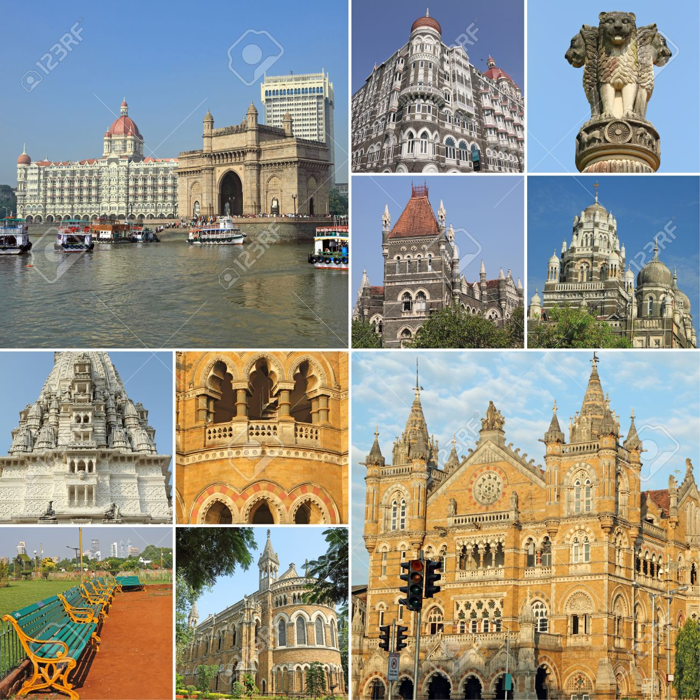

MAHARASHTRA is a state in the western peninsular region of India occupying a substantial portion of the Deccan Plateau. It is the second-most populous state and third-largest state by area in India. Spread over 307,713 km2 (118,809 sq mi), it is bordered by the Arabian Sea to the west, the Indian states of Karnataka and Goa to the south, Telangana to the southeast and Chhattisgarh to the east, Gujarat and Madhya Pradesh to the north, and the Indian union territory of Dadra and Nagar Haveli to the north west It is also the world's second-most populous subnational entity.
Maharashtra has a parliamentary system of government with two democratically elected houses, the Legislative Assembly and the Legislative Council. The Maharashtra Legislative Assembly (Vidhan Sabha) consists of 288 members who are elected for five-year terms.The Maharashtra Legislative Council (Vidhan Parishad) is a permanent body of 78 members with a third of members replaced every two years. The government of Maharashtra is headed by the Chief Minister, who is chosen by the party or coalition holding the majority in the Legislative Assembly. The Chief Minister, along with the council of ministers, drives the legislative agenda and exercises most of the executive powers.[114] However, the constitutional and formal head of the state is the Governor, who is appointed for a five-year term by the President of India on the advice of the Union government. presently Bhagat Singh Koshyari is the Governor and Devendra Fadnavis is the Chief Minister.